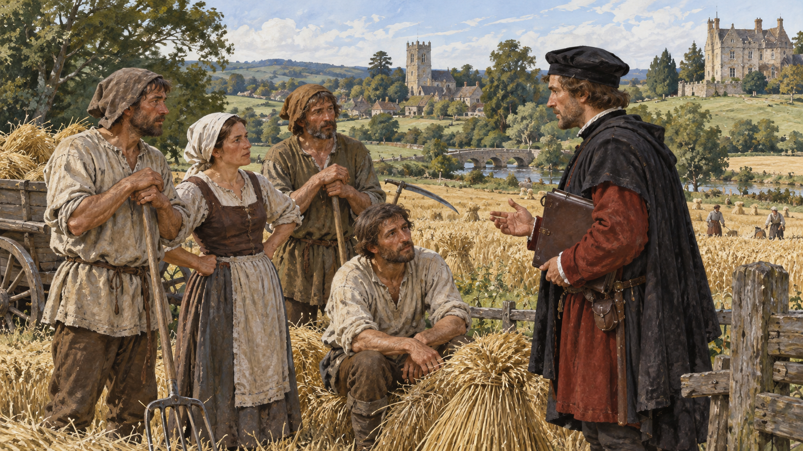

Finance · Money
흑사병 뒤의 임금 — 일할 사람이 줄자 무엇이 달라졌을까
14세기 유럽의 농장과 도시에서 벌어진 노동의 협상

수확할 밭은 남아 있는데 일할 사람이 부족하다. 땅을 가진 사람에게는 난감한 일이지만 노동자에게는 더 나은 조건을 요구할 여지가 생길 수 있다. 14세기 유럽에서 흑사병이 지나간 뒤 이런 긴장이 나타났다.
물론 수많은 사람의 죽음을 경제에 도움이 된 사건으로 부를 수는 없다. 가족과 이웃을 잃은 사회가 다시 움직이는 과정에서 임금과 일의 규칙이 어떻게 달라졌는지, 그 뒤의 갈등을 살펴볼 이야기다.
1. 사람이 사라져도 일은 남았다
흑사병은 유럽의 인구와 공동체에 큰 피해를 주었다. 농촌과 도시 모두 일할 사람이 모자랐다. 살아남은 사람들은 이전의 생활을 이어 가야 했지만 생산과 고용의 조건은 예전과 같지 않았다.
농장에는 작물을 돌볼 손이 필요했고 도시의 작업장에도 숙련과 시간이 필요했다. 땅과 건물을 소유하는 것만으로 생산이 저절로 이어지지는 않았다. 일하는 사람의 존재가 더 뚜렷하게 드러나는 상황이었다.
2. 더 나은 조건이 이동을 불렀다
부족해진 노동자를 구하기 위해 어떤 지주는 이전보다 나은 조건을 제시했다. 농민은 다른 영지로 옮기거나 도시에서 임금을 받는 일을 찾기도 했다. 가족이 오랫동안 머물던 장소만이 유일한 선택지는 아니게 되었다.
이동할 가능성은 협상의 힘이 될 수 있었다. 여기에서 받는 보상이 적다면 다른 곳을 생각할 여지가 생기기 때문이다. 다만 누구나 같은 정보와 자원, 이동의 자유를 가진 것은 아니었다. 변화의 기회도 고르게 나뉘지 않았다.
3. 임금은 시장에서만 정해지지 않았다
사람이 부족하니 임금이 오른다는 한 줄로 이 이야기를 끝내기는 어렵다. 지주와 통치자는 기존의 질서를 지키려 했다. 더 나은 대우를 요구하는 노동자에게 법과 관습이 맞서는 일이 벌어졌다.
임금은 일손의 많고 적음뿐 아니라 누가 규칙을 만들고 집행할 수 있는지에도 영향을 받았다. 고용주가 제시한 조건을 거절할 권리, 다른 곳으로 떠날 권리가 어느 정도인지가 중요한 문제였다.
4. 예전의 액수로 돌아가라는 법
영국에서는 1349년 노동자의 보수를 흑사병 이전 수준에 묶으려는 법이 나왔다. 1351년의 노동자법도 일할 수 있는 사람의 취업과 임금 조건을 통제했다. 부족한 노동력을 더 유리한 조건으로만 경쟁해 구하도록 두지 않은 것이다.
이 법들은 당시 권력자들이 무엇을 걱정했는지 보여 준다. 일손을 확보하고 기존 비용과 관계를 유지하려는 시도였다. 그러나 법이 쓰였다는 사실만으로 모든 지역의 실제 임금이 그대로 통제되었다고 단정할 수는 없다.
5. 도시의 문도 반쯤만 열렸다
도시의 수공업 작업장 역시 일손이 필요했다. 견습을 시작할 기회가 늘거나 수련 기간이 짧아지는 경우가 있었다. 농촌에서 나온 사람에게 새로운 기술을 배울 길이 생길 수 있었다.
반면 길드의 장인들은 독립적인 주인이 되는 자격을 자기 가족과 가까운 사람에게 유리하게 제한하기도 했다. 작업장에 들어가는 문이 넓어져도 높은 지위로 올라가는 문까지 함께 넓어진 것은 아니었다.
6. 생활을 둘러싼 갈등이 터졌다
기존의 부담과 새로운 요구는 여러 지역의 저항으로 이어졌다. 1358년 프랑스의 자크리, 1381년 영국의 농민 반란에는 농민만 아니라 상인과 장인 등도 참여했다. 사람들의 불만은 임금 한 항목에만 머물지 않았다.
이 사건들을 흑사병 하나가 자동으로 만든 결과라고 설명해서는 안 된다. 전쟁과 세금, 통치와 지역의 관계가 함께 얽혀 있었다. 다만 인구 감소 뒤 달라진 노동 조건은 기존 권한을 다시 묻게 하는 중요한 배경이었다.
7. 유럽 전체가 같은 길을 간 것은 아니다
흑사병 뒤에 봉건 질서가 약해졌다는 큰 설명은 지역의 차이를 가릴 수 있다. 서유럽에서 나타난 변화를 모든 시대와 모든 지역의 농민에게 똑같이 적용할 수는 없다. 귀족의 힘과 불평등도 곧바로 사라지지 않았다.
이 글에서 살피는 것은 주로 서유럽의 변화와 영국의 법이다. 노동자에게 생긴 여지와 그것을 막으려는 힘이 함께 있었다. 자유로운 임금 노동의 세계가 어느 날 완성되었다는 이야기와는 거리가 있다.
8. 협상에는 생활의 바탕이 필요했다
더 높은 임금을 요구하려면 당장 먹고살 수단과 다른 일자리에 대한 정보가 필요하다. 일손이 부족해도 가족을 돌보거나 이동하기 어려운 사람에게 선택은 제한될 수 있다. 노동자라는 한 단어 안에도 서로 다른 생활 조건이 있었다.
일을 구하러 떠나는 사람에게는 새로운 기회와 불안이 함께 생긴다. 이전보다 나은 보수를 받을 수 있어도 숙소와 관계, 기술을 다시 마련해야 한다. 명목상의 임금 변화와 실제 생활의 개선을 바로 같은 것으로 보기는 어렵다.
역사 자료에 나온 법과 길드의 규칙은 이런 선택의 범위를 읽는 데 도움을 준다. 법이 요구한 이상적인 질서와 사람들이 실제로 살아 낸 방식 사이의 차이도 남아 있다. 경제의 역사는 그 간격을 살피는 일이기도 하다.
9. 월급의 역사에는 선택권도 들어 있다
임금의 역사는 얼마를 받았는지 적힌 숫자만으로 이루어지지 않는다. 다른 일을 고를 수 있었는지, 이동할 수 있었는지, 일하지 않겠다고 말할 수 있었는지도 중요하다. 같은 보수라도 선택권에 따라 의미가 달라진다.
흑사병 이후의 밭과 작업장은 그 점을 보여 준다. 일손이 귀해졌다는 경제의 변화와 기존의 질서를 지키려는 법이 부딪쳤다. 돈의 이야기를 따라가다 보면 그 돈을 받고 일할 사람의 권리가 함께 나타난다.
이야기의 바탕이 된 자료
- OpenStax World History — The Long-Term Effects of Global Transformation ↗확인일 2026-10-31
서유럽 노동력 부족·농민의 이동과 임금 요구 · 1349년 법·1351년 영국 노동자법·길드의 진입 및 승급 제한 · 1358년 자크리·1381년 영국 농민 반란·지속된 불평등